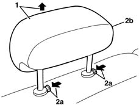

7050B12 rear seat head restraint - r r
- Path
- Procedures > 70 FITTINGS > 7050 REAR SEATS > 7050B rear seat head restraint/arm rest > 7050B12 rear seat head restraint - r r
- Kind
- repair procedure (removal / refitting; the operation number is the code)
- Applies to
- all engines; all production periods
- Interactive page
- https://sloeber94.github.io/elrnDB-lYpsln/en/#/2429662
Applies to: all engines; all production periods
 Removing
Removing
 Refitting
Refitting1. Raise the head restraint to the limit of its travel.
2. Press the retainers (2a) and release the head restraint (2b).

Applies to: all engines; all production periods
Refitting
RemovingCheck that the head restraint is not damaged.
Press the retainers and insert the head restraint.
Check that the head restraint is working properly.